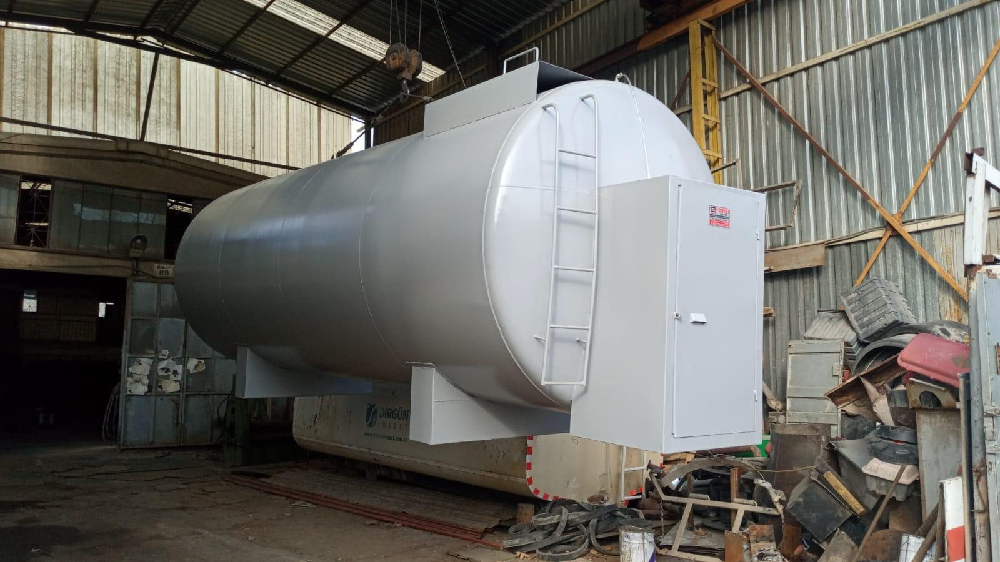
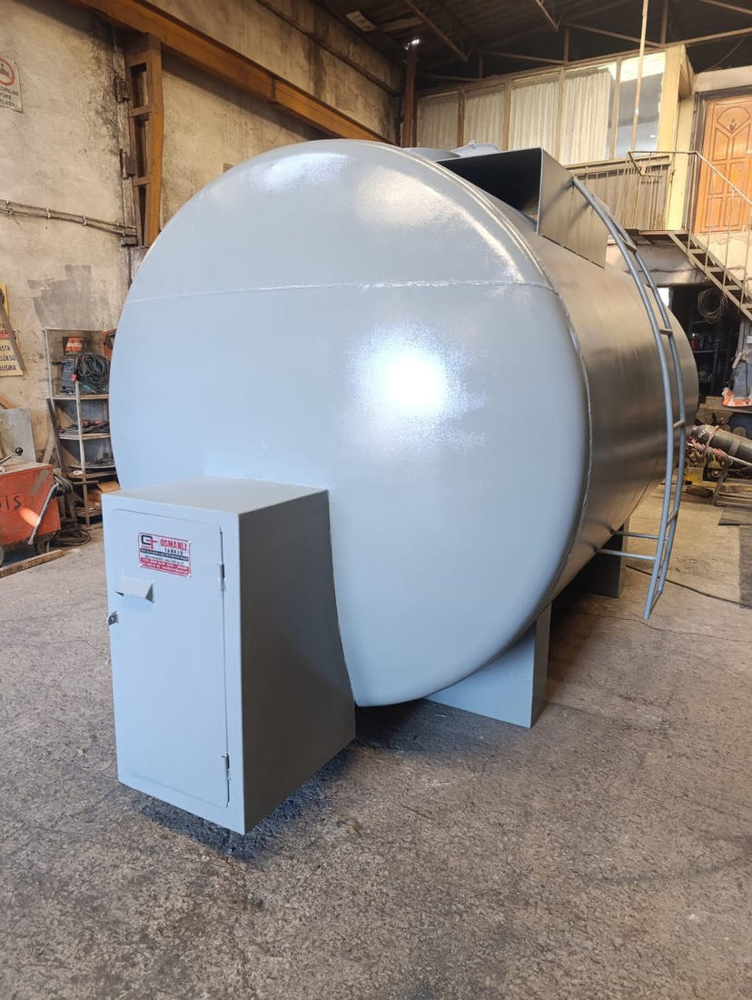

ANKARA OSTİM • OSMANLI TANKER
Depolama Tankları İmalatı
Yatay ve dikey depolama tankları için ihtiyaca uygun imalat çözümleri. Ürün ve imalat detayları için bizimle iletişime geçebilirsiniz.
Ürün Görselleri


Osmanlı Tanker • 1235. Cadde No:89, Ostim, Yenimahalle / Ankara